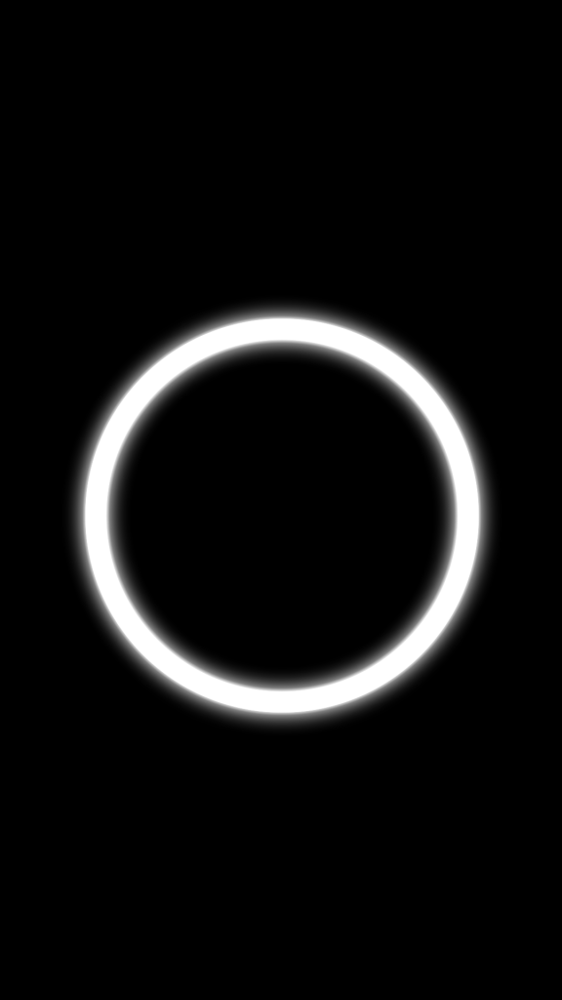
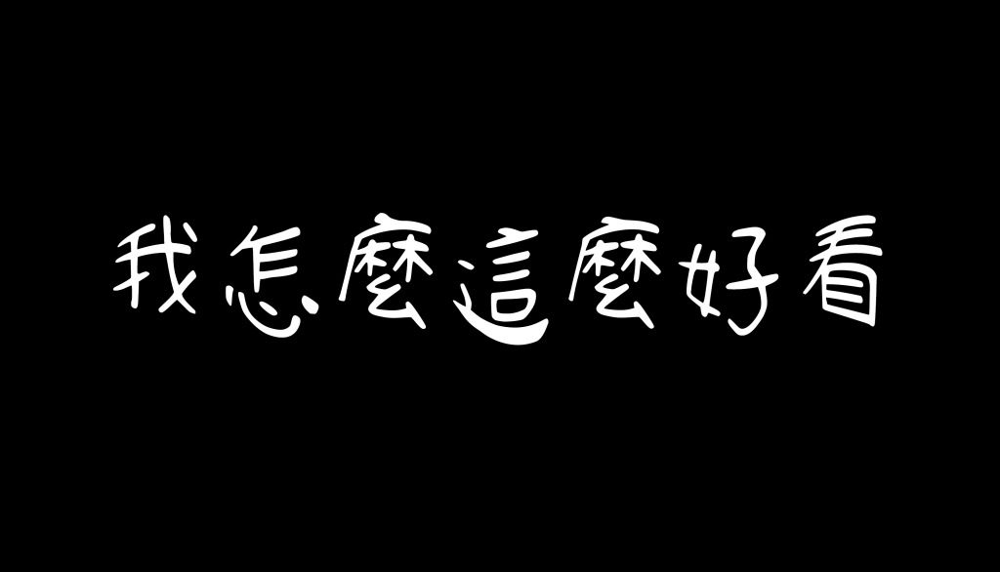

SPARK AR / INTERACTIVE FILTERS
Spark AR 互動濾鏡
文字跟著臉移動，圖像隨手勢回應。
從自拍文字到觸控操作，將素材、動畫與互動邏輯組合成拍攝時可以使用的效果。
01 / TOUCH & RESPONSE
Click｜讓畫面回應手勢

把圖像放進鏡頭，讓使用者自己決定它如何出現、放在哪裡。專案將點擊與音效連接，也在另一個版本加入拖曳、縮放與旋轉，探索更自由的畫面操作。
簡單工作流
選一個手勢，看它如何影響畫面- 01 / 使用者操作
點擊螢幕
Screen Tap - 02 / 互動處理
切換開關狀態
Switch → Pulse - 03 / 畫面反應
顯示切換＋音效
Visible / Audio Player
點擊切換圖像的顯示狀態；音效由另一條開關分支在開啟時觸發。這兩條連線共同形成點擊回饋。
依原始專案重繪的簡化流程。切換按鈕可查看說明。
看看原始素材與製作細節

同一個互動想法，保留了不同版本。
click/click.arproj 使用 49 格、每秒 25 格循環的光圈素材；手勢分別連到圖像的位置、縮放與旋轉屬性。
click..arproj 保留另一組圖像設定，並有音訊頻段經平滑處理後連到縮放的分支。
流程以已連接到輸出的分支為主，省略內部運算與未接到畫面輸出的測試節點。以上為專案結構分析，尚未重新執行原濾鏡驗證。
02 / FACE & TYPOGRAPHY
我怎麼這麼好看

用一句手寫字樣表達自拍時的心情。文字以逐格動畫呈現，透過臉部追蹤跟隨人像，再搭配修膚與畫面調色，組合成完整的濾鏡效果。
效果怎麼組成
臉部追蹤 × 文字動畫- 01 / 素材
手寫文字動畫
20 格 · 15 fps · 循環 - 02 / 場景設定
文字平面跟隨臉部
Face Tracker → Plane - 03 / 使用效果
自拍畫面加入文字
文字材質＋人像畫面
依「我怎麼這麼好看 2021」的場景與材質設定整理。
畫面調色攝影機畫面 → ColorFilter → 畫面材質
看看原始文字素材

原始文字動畫的其中一格。修膚設定與文字動畫分別保存在材質和場景中。